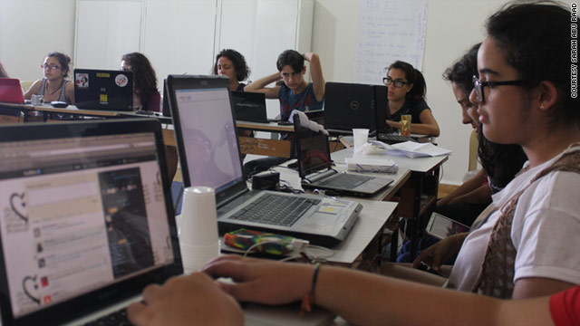

|
|
اردوی دختران گیک در بیروت، رفع شکاف جنسیتی در تکنولوژی را هدف میگیرد
يكشنبه16 مرداد 1390
تغییر برای برابری
* اردوی دختران گیک[۱] به نوجوانان کمک میکند برای مشاغل فنآوری پیشرفته[۲] آماده شوند
* دخترها با شبکههای اجتماعی، برنامهنویسی، عکاسی و امنیت آشنا میشوند
* هدف سازماندهندگان پایان دادن به افسانههای نادرست و رفع شکاف جنسیتی در لبنان است

سیانان- کارین رمضان- نوجوانی که خود را گیک میداند- اغلب روزی پنج ساعت را در اینترنت میگذراند. او دوست دارد وقتی بزرگتر شد در حوزهی فنآوری کار کند، اما مجبور خواهد بود با «شکاف جنسیتی» نیرومندی که به گفتهی فعالان، در جامعهی فنآوری پیشرفتهی بیروت وجود دارد، مبارزه کند.
کارین ۱۶ ساله نامزد ایدهالی برای اردوی دختران گیک بود که اکنون برای نخستین بار برای ۱۶ نوجوان در کوههای لبنان برگزار میشود.
دخترها در این اردو دربارهی شبکههای اجتماعی، امنیت اینترنت، برنامهنویسی پایه، وبلاگ، عکاسی، بازیهای رایانهای، فنآوری تلفن همراه، ادیت ویدیو، مشاغل حوزه فنآوری، کارآفرینی و ... میآموزند.
نادین معوض، فعال حقوق زنان و تکنولوژی و برگزارکننده اردو، میگوید: «میخواهم شکاف جنسیتی در تکنولوژی را که در لبنان بسیار شدید است از بین ببرم. دختران برای پیگرفتن ریاضیات یا مهندسی ترغیب نمیشوند. اگر شما با کسی در پشتیبانی آیتی[۳] یا یک کارآفرین برخورد کنید انتظار دارید که مرد باشد.
ما سعی میکنیم این افسانهها را بشکنیم و به دختران گزینه پیگیری فنآوری را در کالج یا در شغلشان بدهیم.»
محاسبهی آمارهای فرصتهای کاری در حوزه فنآوری برای زنان دشوار است، اما یک بررسی بر روی کاربران فیسبوک در سال ۲۰۱۰ توسط دیدبان روابط عمومی انجام شد که در وبسایت Online marketing trends گزارش شد و نشان میداد زنان لبنان فعالتر از دیگر کشورهای خاورمیانه و شمال افریقا بودند، اما بعد از اروپا و ایالات متحده قرار داشتند.
این گزارش نشان میداد ۴۴٪ از ۹۳۰۰۰۰ عضو فیسبوک در لبنان زن بودند، در مقایسه با ۳۷٪ در سرتاسر خاورمیانه و شمال افریقا، و ۵۶٪ در ایالات متحده.
معوض عضو یک انجمن زنان به نام «نسوية» است که برنامههایی در حوزههای گوناگون اجرا میکند، از سیاست گرفته تا نوشتن. این انجمن برنامهی مداومی دارد به نام «فنآوری را پس بگیر» که به زنان ۲۰ تا ۳۰ ساله معطوف است.
اردوی دختران گیک تلاشی است برای آوردن این ایدهها به میان نسلی جوانتر در حدود ۱۵ تا ۱۹ ساله.
معوض میگوید: «ما متوجه شدیم دختران نوجوان ازاینترنت استفاده میکنند و نیاز به بالا بردن تواناییهایشان و درکشان از فنآوری و رسانههای گروهی دارند.
«توانایی دخترها برای دریافت سریع مقدار زیادی اطلاعات مرا غافلگیر کرده است. آنها بومیان دنیای دیجیتال هستند.»
معوض ۲۹ ساله خود تصادفی متوجه علاقهاش به فنآوری شدهاست؛ در دوران دانشگاه هنگامی که برای گرفتن یک شغل نیمهوقت ساختن وبسایت، درباره دانش فنی خود بزرگنمایی میکرد.
او میگوید: «هنگامی که من بزرگ میشدم اینترنت تازه به لبنان آمده بود. اولین بار در ۱۷ سالگی به شبکه وصل شدم. من به کار احتیاج داشتم به همین دلیل دروغ گفتم تا آن شغل را بهدست آورم و مجبور شدم شبانه html را به صورت خودآموز یاد بگیرم.»
از دخترانی که در اردوی یک هفتهای شرکت کرده بودند خواسته شده بود هر چقدر که استطاعت دارند بپردازند، تا در کنار جمعآوری کمکهای مالی در نسوية، هزینه اردو تامین شود.
یکی از مشکلات کار، ترغیب کردن والدین برای دادن اجازه شرکت دخترانشان در اردو بود، برای بسیاری از آنها یک هفته دوری دخترشان از خانه نگرانکننده بود.
معوض میگوید: «ما جلسههایی برگزار کردیم تا والدین بتوانند ما را بشناسند و با پروژه آشنا شوند. با اینحال بسیاری از والدین به دخرانشان اجازه ندادند بیایند.»
کارین که با اردو از طریق یک آگهی فیسبوکی آشنا شده بود این مشکل را نداشت. او میگوید: «خانواده من میدانند که من یک گیک هستم به همین دلیل خیلی دوست داشتند که من بیایم. همه دوستانم هم فکر میکردند که این برنامه خیلی جالب به نظر میآید.
«من بیشتر از همه از یادگیری هک و برنامهنویسی لذت بردم. ما همگی مهارتهای خوبی داریم، برای همین نمیتوانم فکرش را هم بکنم که اشتغال در حوزه فنآوری برایمان زیاد سخت باشد.»
[۱] اصطلاح عامیانهی گیک (Geek) معانی زیاد و متفاوتی دارد، از جمله «متخصص یا خورهی کامپیوتر» که میتواند بار معنایی منفی «شخصیتی عجیب و غریب» داشته باشد. (رک Geek و Geek girl)
[۲] high-tech
[۳] IT فنآوری اطلاعات